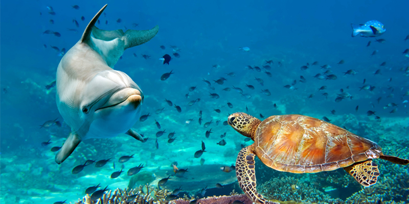
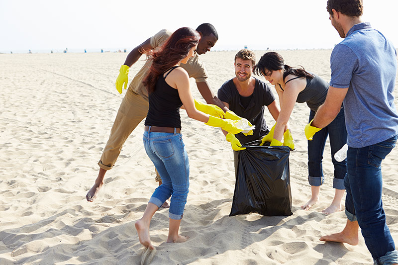

Ecosistemas Marinos
Los ecosistemas marinos como arrecifes de coral, manglares y mar abierto son el hogar de miles de especies. Su equilibrio es vital para la vida en la Tierra.
Especies en Peligro
Muchas especies marinas están amenazadas por la contaminación, la pesca excesiva y el cambio climático. Entre ellas, tortugas marinas, tiburones y corales.

¿Qué Podemos Hacer?
Reducir el uso de plásticos, apoyar leyes de conservación, y participar en limpiezas de playas son algunas formas de ayudar. Cada acción cuenta.
